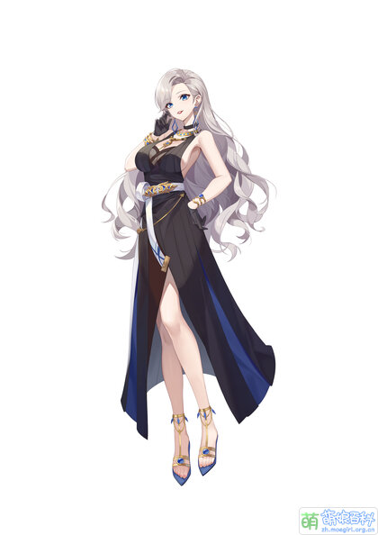

| 首页 | 团体资料 | 成员介绍 | 相关作品 |
基本资料
|
 | ||||||||||||||||||||||||||||||||||||||||||||||
简介A-SOUL组合中的御姐角色，充满贵妇气质，擅长有关奢侈品与节日风俗的科普，在抖音的短视频里面经常向队员进行各类科普，具有浓厚的电台风格。在初设中是A-SOUL五人里面最后一个赶回来的海外留学生。 单人直播以深夜电台和杂谈为主，涉及希腊神话，刑法等，后面的单播还进行过游戏回与歌舞回。 团播时一般担任MC，控场能力极强。 单播中玩过守望先锋和奥日与黑暗森林。
|
|||||||||||||||||||||||||||||||||||||||||||||||
官方形象目前共有21种形象，分别为：常服，圣诞炫彩、睡衣1、睡衣2、睡衣派对、黄色JK。A-soul团服(打歌服)，A-soul团服(打歌服).ver生日炫彩（绯红玫瑰），赤伶炫彩，国风、国风.ver绝世舞姬，三阶段泳装。欧莱雅三件、春节服、春节服.ver金纹鹊黑，春节服.ver金纹鹊黑·改·白玉叆叇，2022冬奥炫彩、黑色运动服 |
|||||||||||||||||||||||||||||||||||||||||||||||
 |
|||||||||||||||||||||||||||||||||||||||||||||||